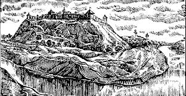
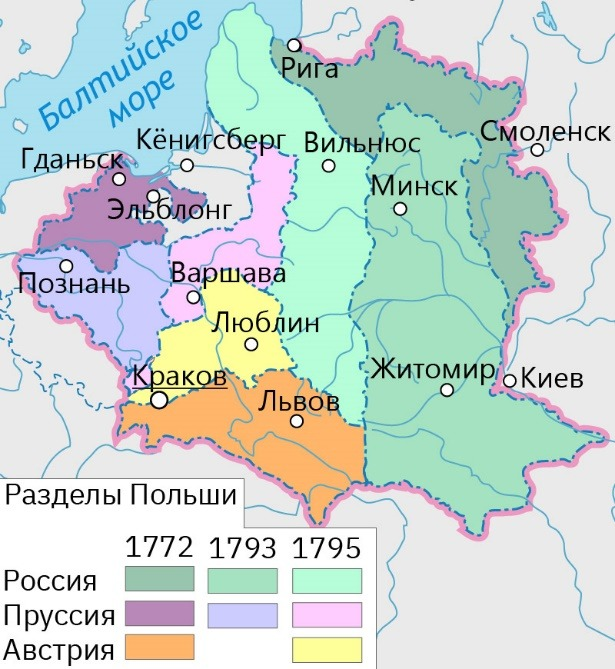
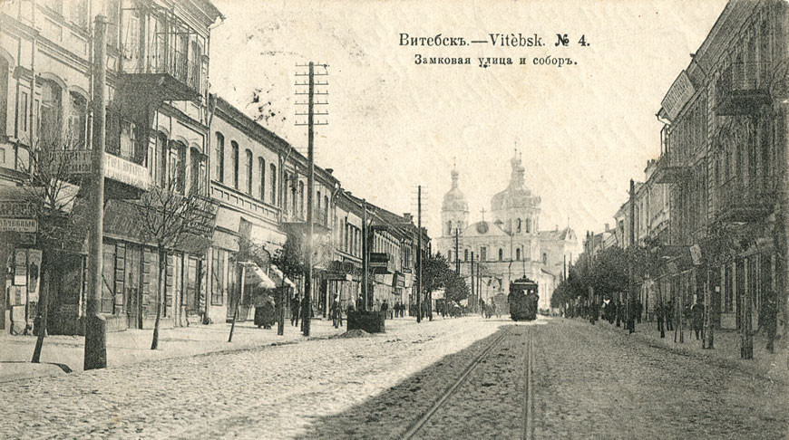
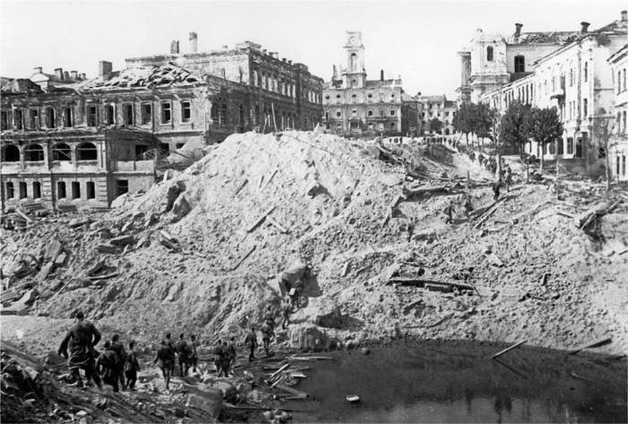
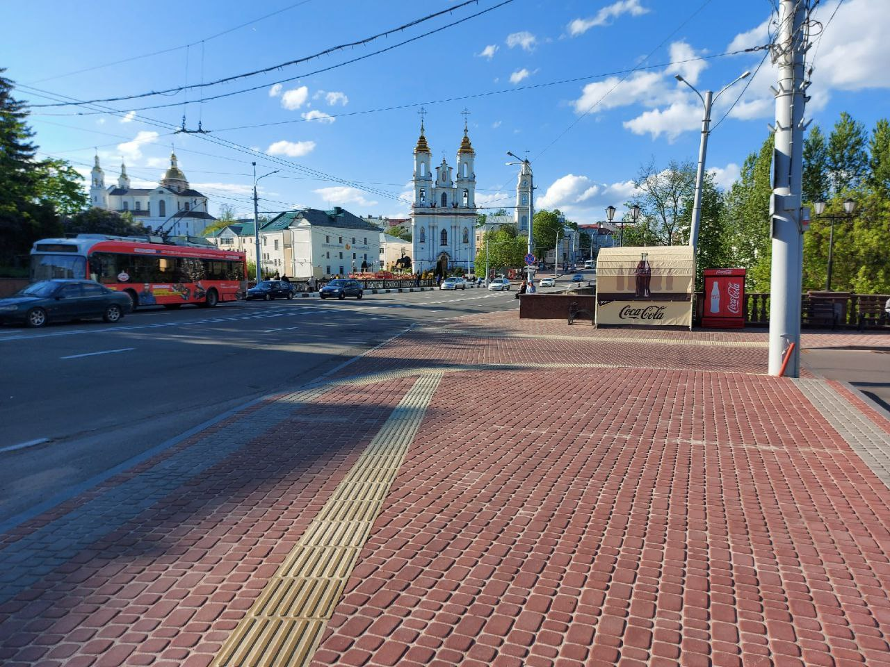

Основание города и первые упоминания
Согласно официальному заявлению Академии наук СССР, Витебск был основан в 974 году, являясь вторым по возрасту городом Беларуси, однако впервые в русских летописях он был упомянут в 1021 году как "Видбеск". Город часто менял своё произношение и правописание, но одно оставалось неизменным — он был назван в честь одной из трёх рек, протекающих через него — Витьбы.

В составе Полоцкого Княжества, ВКЛ и Речи Посполитой
С самого начала Витебск был в подчинении Полоцкого князя Брячислава Изяславича. Витебск большую часть своей истории не был крупным городом — что в ВКЛ, что в Речи Посполитой он во всём уступал своему "старшему" брату — Полоцку.

Под крылом Империи
После первого раздела Речи Посполитой в 1772 году Витебск вошёл в состав Российской Империи, где стал столицей Витебской Губернии (официально этот статус был закреплён в 1802 году), после чего начал активно развиваться. Именно в Витебске был запущен первый трамвай на территории современной Беларуси в 1898 году, а сам город стал железнодорожным центром Витебской Губернии.

Великая Отечественная война
После революции, гражданской войны и Великой Отечественной — а также прочих ужасов, что пришлись на голову населения нашей страны в первой половине 20 века — Витебск оказался полностью разрушен. Из всего города целыми остались 3 здания, а из 180 тысяч довоенного населения освободителей вышло встречать всего 118 выживших. Послевоенный план восстановления изначально не предполагал восстановления Витебска, а полный перенос города в другое место. Однако граждане выступили с несогласием, и после многочисленных споров город удалось сохранить и начать восстанавливать на прежнем месте.

Наше время
Витебск не потерял своего статуса областного центра после развала Советского Союза и всё ещё является "Северной столицей" Беларуси.
